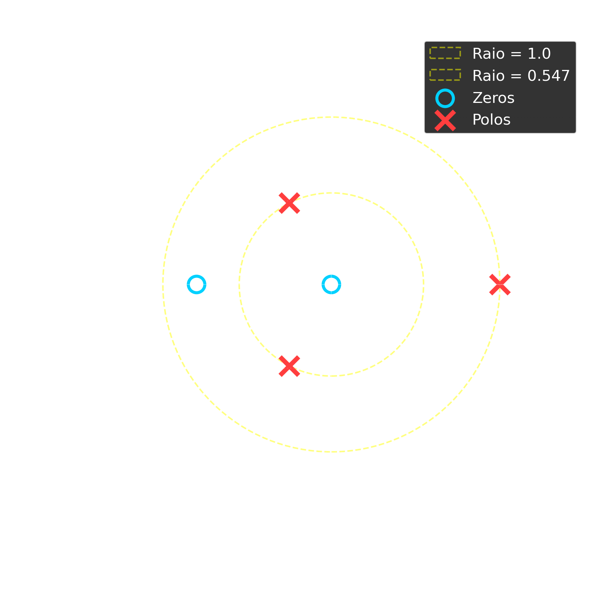
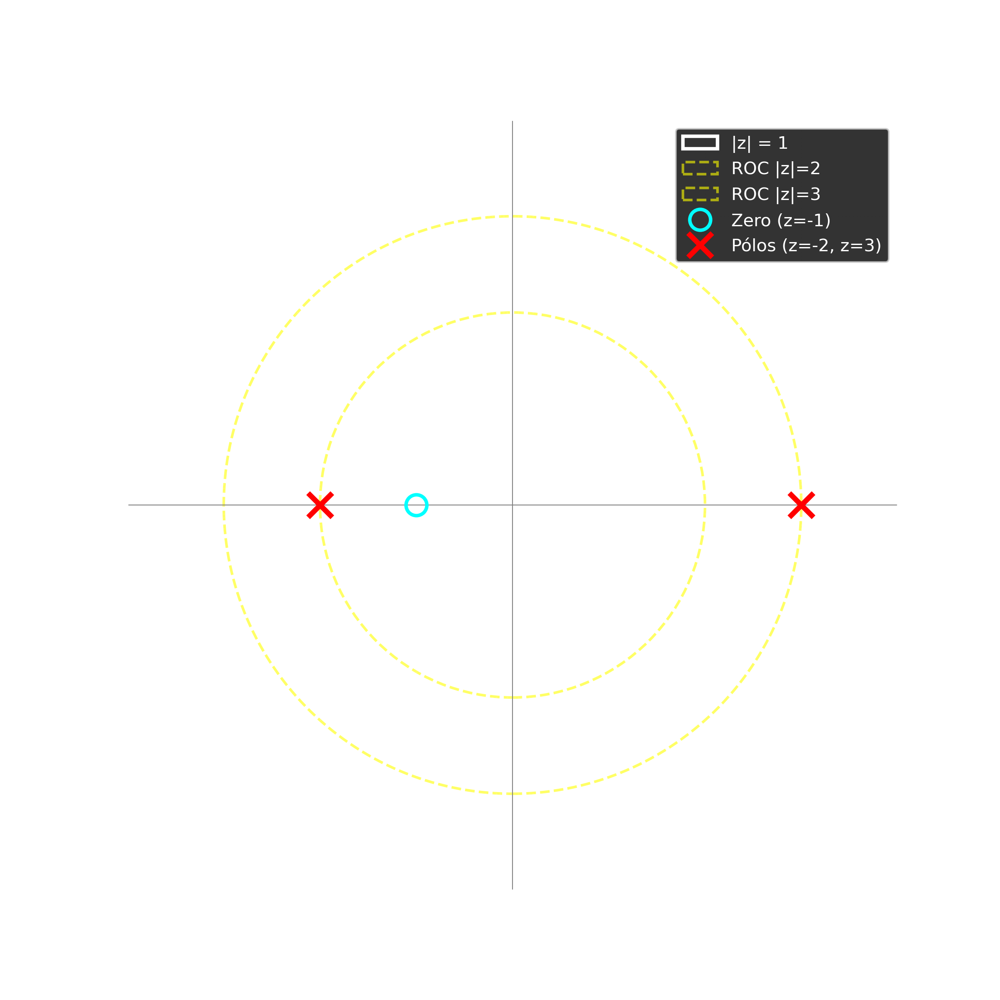
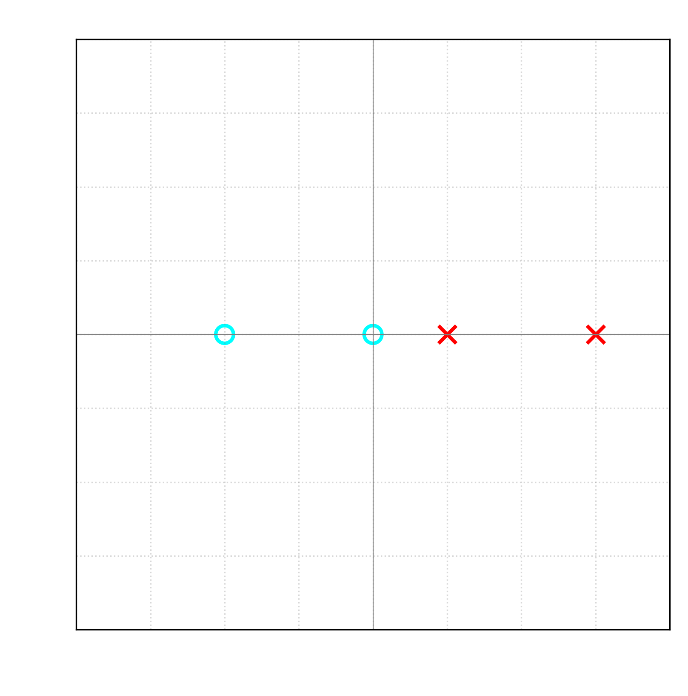
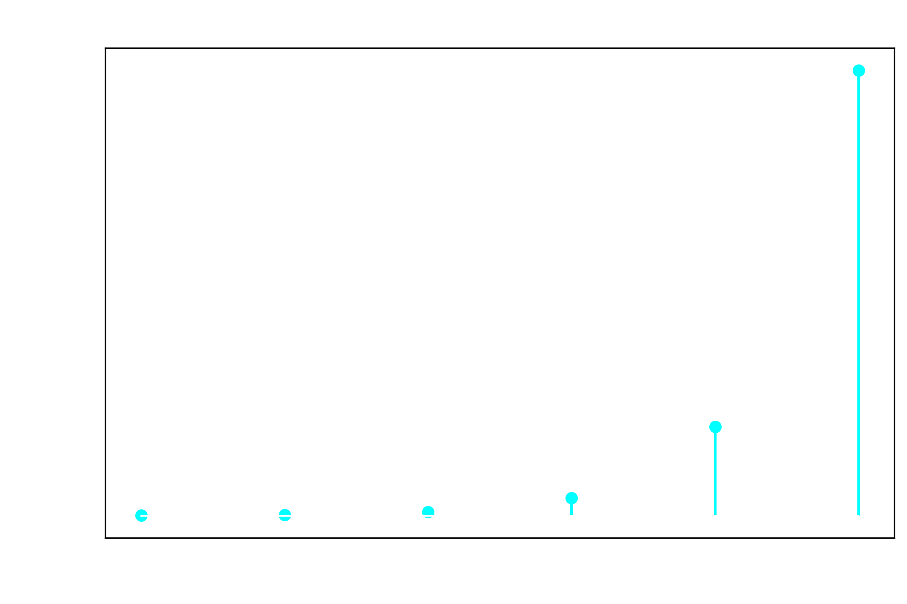

Questão 01. Considere um sistema LIT descrito por:
\[y[n] - 0,5y[n-1] - 0,2y[n-2] - 0,3y[n-3] = x[n] + 0,8x[n-1]\]
Assumindo condições iniciais nulas, determine:
- A função de transferência do sistema.
- Os polos e os zeros do sistema.
- A análise de estabilidade e causalidade do sistema.

Questão 02. Seja um sistema LIT com a seguinte função de transferência na Transformada Z:
\[\displaystyle H[Z] = \frac{z + 1}{z^2 - z - 6}\]
Determine a resposta ao impulso do sistema \(\displaystyle h[n]\), considerando que o sistema é causal.


Questão 03. Considere o sistema definido pela equação de diferença:
\[\displaystyle y[n] - 3y[n-1] = x[n]\]
Com as condições iniciais \(\displaystyle y[-1] = 1\) e uma entrada degrau unitário \(\displaystyle x[n] = u[n]\). Utilize o método da expansão em frações parciais para encontrar a saída do sistema \(\displaystyle y[n]\) para \(\displaystyle n \ge 0\).

Questão 04. Considere um sistema linear e invariante no tempo (LIT) descrito pela seguinte equação de diferença:
\[\displaystyle [n] - 4y[n-1] + 3y[n-2] = x[n] + 2x[n-1] \]
Assumindo condições iniciais nulas, determine:
- A função de transferência do sistema.
- Os polos e os zeros do sistema.
- A análise de estabilidade e causalidade do sistema.

Questão 05. Seja um sistema LIT com a seguinte função de transferência na Transformada Z:
\[\displaystyle H[z] = \frac{z - 2}{z^2 - 5z + 6}\]
Determine a resposta ao impulso do sistema, \(\displaystyle h[n]\), considerando que o sistema é causal.


Questão 06. Considere o sistema definido pela equação de diferença:
\[\displaystyle y[n] - 5y[n-1] = x[n]\]
Com as condições iniciais \(\displaystyle y[-1] = 2\) e uma entrada degrau unitário \(\displaystyle x[n] = u[n]\). Utilize o método da expansão em frações parciais para encontrar a saída do sistema \(\displaystyle y[n]\) para \(\displaystyle n \ge 0\).

Questão 01. Resolução letra a.
\[\displaystyle y[n] - 0,5y[n-1] - 0,2y[n-2] - 0,3y[n-3] = x[n] + 0,8x[n-1]\]
\[\displaystyle Y[Z] - 0,5z^{-1}Y[Z] - 0,2z^{-2}Y[Z] - 0,3z^{-3}Y[Z] = X[Z] + 0,8z^{-1}X[Z ]\]
\[\displaystyle Y[Z][1 - 0,5z^{-1} - 0,2z^{-2} - 0,3z^{-3}] = X[Z][1 + 0,8z^{-1}]\]
\[\displaystyle H[Z] = \dfrac{1 + 0,8z^{-1}}{1 - 0,5z^{-1} - 0,2z^{-2} - 0,3z^{-3}}\]
\[\displaystyle H[Z] = \dfrac{z^{3} + 0,8z^{2}}{z^{3} - 0,5z^{2} - 0,2z - 0,3}\]
\[\displaystyle H[Z] = \dfrac{z^{2}(z + 0,8)}{(z-1)(z^{2} + 0,5z + 0,3)}\]
Questão 01. Resolução letra b.
Os zeros são: \(z = 0\) multiplicidade de dois zeros e \(z = - 0,8\).
Os polos são: \(z = 1\) , \(z = 0,547 \angle 117,17^{\circ}\) e \(z = 0,547 \angle 242,83^{\circ}\).
Questão 01. Resolução letra c.
Instável e anti-causal \(\longrightarrow\) \(0 < |z| < 0,547\)
Marginalmente estável e não causal \(\longrightarrow\) \(0,547 < |z| < 1\)
Marginalmente estável e causal \(\longrightarrow\) \(|z| > 1\)
Questão 02. Resolução.
\[\displaystyle H[Z] = \dfrac{z + 1}{(z-3)(z +2)}\]
\[\displaystyle H[Z] = \dfrac{z^{-1} + z^{-2}}{(1 - 3z^{-1})(1 + 2z^{-1})}\]
\[\displaystyle \dfrac{z^{-1} + z^{-2}}{(1 - 3z^{-1})(1 + 2z^{-1})} = \dfrac{A}{1 - 3z^{-1}} + \dfrac{B}{1 + 2z^{-1}} \]
\[\displaystyle A \bigg|_{z^{-1}=1/3} = \dfrac{\frac{1}{3} + \frac{1}{9}}{1 + \frac{2}{3}} = \dfrac{\frac{4}{9}}{\frac{5}{3}} = \dfrac{4}{15}\]
\[\displaystyle B \bigg|_{z^{-1}= -1/2} = \dfrac{-\frac{1}{2} + \frac{1}{4}}{1 + \frac{3}{2}} = \dfrac{-\frac{1}{4}}{\frac{5}{2}} = -\dfrac{1}{10}\]
\[\displaystyle H[Z] = \dfrac{\frac{4}{15}}{1 - 3z^{-1}} + \dfrac{-\frac{1}{10}}{1 + 2z^{-1}}\]
\[\displaystyle h[n] = \left[\frac{4}{15}(3)^{n} - \frac{1}{10} (-2)^{n}\right]u[n] \]
Questão 03. Resolução.
\[\displaystyle Y[Z] - 3[z^{-1}Y[Z] + Y[-1]] = X[Z] \]
\[\displaystyle Y[Z] - 3z^{-1}Y[Z] - 3Y[-1] = X[Z] \]
\[\displaystyle Y[Z][1 - 3z^{-1}] = X[Z] + 3Y[-1] \]
\[\displaystyle Y[Z] = \dfrac{X[Z]}{(1 - 3z^{-1})} + \dfrac{3Y[-1]}{1 - 3z^{-1}} \]
Mas se \(x[n] = u[n]\) \(\longrightarrow\) \(X[Z] = \dfrac{1}{1-z^{-1}}\) para \(|z| > 1\)
\[\displaystyle Y[Z] = \dfrac{1}{(1 - 3z^{-1})(1-z^{-1})} + \dfrac{3}{1 - 3z^{-1}} \]
Por frações parciais temos que:
\[\dfrac{1}{(1 - 3z^{-1})(1-z^{-1})} = \dfrac{A}{1 - 3z^{-1}} + \dfrac{B}{1-z^{-1}} \]
\[\displaystyle A \bigg|_{z^{-1}=1/3} = \dfrac{1}{1 - \frac{1}{3}} = \dfrac{1}{\frac{2}{3}} = \dfrac{3}{2}\]
\[\displaystyle B \bigg|_{z^{-1}=1} = \dfrac{1}{1 - 3} = -\dfrac{1}{2} \]
\[\displaystyle Y[Z] = \dfrac{\frac{3}{2}}{1 - 3z^{-1}} - \dfrac{\frac{1}{2}}{1 - z^{-1}} + \dfrac{3}{1 - 3z^{-1}} \]
\[\displaystyle Y[Z] = \dfrac{\frac{9}{2}}{1 - 3z^{-1}} - \dfrac{\frac{1}{2}}{1 - z^{-1}} \]
\[\displaystyle y[n] = \left[\dfrac{9}{2}(3)^{n} - \dfrac{1}{2} \right]u[n] \]
Questão 04. Resolução letra a.
\[\displaystyle y[n] - 4y[n-1] + 3y[n-2] - 0,3y[n-3] = x[n] + 2x[n-1]\]
\[\displaystyle Y[Z] - 4z^{-1}Y[Z] + 3z^{-2}Y[Z] = X[Z] + 2z^{-1}X[Z ]\]
\[\displaystyle Y[Z][1 - 4z^{-1} + 3z^{-2}] = X[Z][1 + 2z^{-1}]\]
\[\displaystyle H[Z] = \dfrac{1 + 2z^{-1}}{1 - 4z^{-1} + 3z^{-2}}\]
\[\displaystyle H[Z] = \dfrac{z^{2} + 2z}{z^{2} - 4z + 3}\]
\[\displaystyle H[Z] = \dfrac{z(z + 2)}{(z-3)(z-1)}\]
Questão 04. Resolução letra b.
Os zeros são: \(z = 0\) e \(z = - 2\).
Os polos são: \(z = 1\) e \(z = 3\).
Questão 04. Resolução letra c.
Marginalmente estável e anti-causal \(\longrightarrow\) \(0 < |z| < 1\)
Marginalmente estável e não causal \(\longrightarrow\) \(1 < |z| < 3\)
Instável e causal \(\longrightarrow\) \(|z| > 3\)
Questão 05. Resolução.
\[\displaystyle H[Z] = \dfrac{z - 2}{(z - 3)(z - 2)}\]
\[\displaystyle H[Z] = \dfrac{1}{z - 3}\]
\[\displaystyle H[Z] = \dfrac{z^{-1}}{1 - 3z^{-1}}\]
\[\displaystyle H[Z] = z^{-1}\dfrac{1}{1 - 3z^{-1}}\]
Observe que \(z^{-1}\) corresponde a um atraso.
\[\displaystyle h[n] = 3^{n-1} u[n-1]\]
Estável e anti-causal \(\longrightarrow\) \(|z| < 3\)
Instável e causal \(\longrightarrow\) \(|z| > 3\)
Questão 06. Resolução.
\[\displaystyle Y[Z] - 5[z^{-1}Y[Z] + Y[-1]] = X[Z] \]
\[\displaystyle Y[Z] - 5z^{-1}Y[Z] - 5Y[-1] = X[Z] \]
\[\displaystyle Y[Z][1 - 5z^{-1}] = X[Z] + 5Y[-1] \]
\[\displaystyle Y[Z] = \dfrac{X[Z]}{1 - 5z^{-1}} + \dfrac{5Y[-1]}{1 - 5z^{-1}} \]
Mas se \(x[n] = u[n]\) \(\longrightarrow\) \(X[Z] = \dfrac{1}{1-z^{-1}}\) para \(|z| > 1\)
\[\displaystyle Y[Z] = \dfrac{1}{(1 - 5z^{-1})(1-z^{-1})} + \dfrac{10}{1 - 5z^{-1}} \]
Por frações parciais temos que:
\[\dfrac{1}{(1 - 5z^{-1})(1-z^{-1})} = \dfrac{A}{1 - 5z^{-1}} + \dfrac{B}{1-z^{-1}} \]
\[\displaystyle A \bigg|_{z^{-1}=1/5} = \dfrac{1}{1 - \frac{1}{5}} = \dfrac{1}{\frac{4}{5}} = \dfrac{5}{4}\]
\[\displaystyle B \bigg|_{z^{-1}=1} = \dfrac{1}{1 - 5} = -\dfrac{1}{4} \]
\[\displaystyle Y[Z] = \dfrac{\frac{5}{4}}{1 - 5z^{-1}} - \dfrac{\frac{1}{4}}{1 - z^{-1}} + \dfrac{10}{1 - 5z^{-1}} \]
\[\displaystyle Y[Z] = \dfrac{\frac{45}{4}}{1 - 5z^{-1}} - \dfrac{\frac{1}{4}}{1 - z^{-1}} \]
\[\displaystyle y[n] = \left[\dfrac{45}{4}(5)^{n} - \dfrac{1}{4} \right]u[n] \]